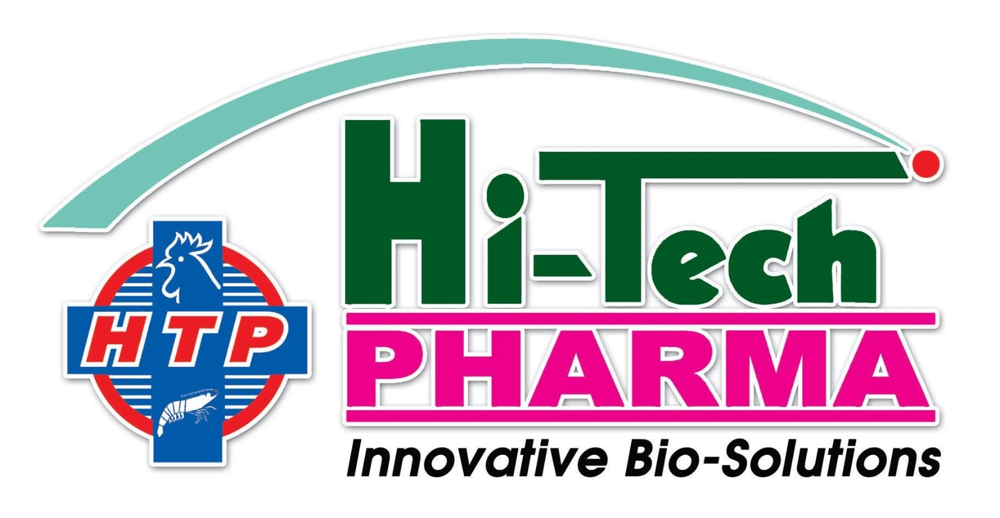
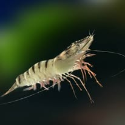

01 / AQUACULTURE
Shrimp
Nutrition, probiotics, water, soil and health management.
Explore shrimp solutions →
Science-led products, biotechnology and technical expertise supporting shrimp, fish, poultry and veterinary businesses.
Integrated solutions for nutrition, water, soil and animal health management.
Discover aqua solutions →Hi-Tech Pharma has evolved into an integrated bio-solutions company focused on Nutrition, Environment and Health management for aquaculture, poultry and veterinary applications.
Founded in the late 1990s, the company grew from feed-supplement expertise into premixes, probiotics, biotechnology and specialized aquaculture solutions.
See our journey →
Our aquaculture portfolio is designed around practical farm requirements — from feed supplementation and probiotics to water and pond-environment management.
Show the client immediately that the brand works across aquaculture and animal-health segments — not just shrimp.
Nutrition, probiotics, water, soil and health management.
Explore shrimp solutions →
Solutions positioned around fish nutrition, environment and health.
Explore fish solutions →
Premixes, feed supplements, probiotics and animal-health support.
Explore poultry solutions →
Pairing industry imagery with real manufacturing and biotechnology visuals makes the proposal feel like a complete corporate website rather than a generic template.

Use the filters to explore how the portfolio can be presented to farmers, distributors and institutional buyers.
Microbial solutions positioned around water quality, organic matter management, gut health and production efficiency.
Nutrition-focused solutions supporting the requirements of fish and shrimp farming operations.
Solutions addressing pond conditions, bottom quality and the biological balance required for healthy culture systems.
Formulated feed-supplement solutions for nutritional and productivity requirements in poultry operations.
Products and technical capabilities supporting nutrition and health-management programs for animals.
Private-label and contract manufacturing support covering formulation, manufacturing, packaging and quality assurance.
A stronger visual story for a client-facing website: ponds, aeration, fish culture and shrimp farming environments.
Hi-Tech Pharma's R&D work includes biotechnology and research aimed at improving production efficiency and sustainability in aquaculture.
A presentation-ready quality story for distributors, farmers and B2B partners.
A visual timeline makes the story easy for clients and partners to understand.
Hi-Tech Pharma begins its journey in animal-health solutions.
The business shifts toward the growing fish and shrimp farming sector.
A large-scale feed-supplement facility is established for aquaculture, poultry and veterinary applications.
Dedicated probiotic manufacturing capability is launched.
Exports expand into Middle Eastern, Asian and African markets.
Tell us what you are looking for. This demo is structured to turn website visitors into qualified business enquiries.